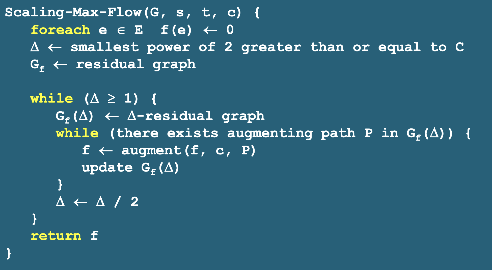

- 每条边 e 关联一个容量， 计作 c.
- 存在单一源点 s
- 存在单一汇点 t
- 对一个网络，首先有 $0 \leq f(x) \leq c$
- 对一个节点，有 $f_{in}(v) = f_{out}(v)$, s 和 t 点除外。
最大流问题与 Ford - Fulkerson 算法
问题: 寻找从 s 到 t 的最大的流， 不存在单一的路径可以使流最大。
剩余图$G_{f}$: 当设置完一次路径后，还剩余flow 的每条边容量组成的图。
forward edge(前向边): $c-f(e)$， backward edge(后向边) $f(e)$
增广路径: 对于简单路径 p, bottleneck(p,f) 是 p 上所有边关于流 f 的最小容量
剩余图的增广路径: 如果一条路径是前向边，那么f(e)+bottleneck, 如果是后向边，那么减b。
这里就不贴图了，主要还是概念，fulkerson 算法主要是计算剩余图，复杂度是O(cm),其中C是至多完成C个循环。 C 仍是网络流的最大值。
最大流与最小分割
把这个图分成两个集合A 和 B，一个集合包含 S 一个集合包含 t。
一个割（A，B）的容量记为 C(A,B).是从集合A出来的最大容量的和。
cut 提供了整个flow 的上界。
$$
v(f)=\sum_{v \in A}\left(f^{\text {out }}(v)-f^{\text {in }}(v)\right)
$$
其中 v 是 A 中除了 S 之外所有的点。 $v(f) \leq c(A,B)$.上界是最大流。
通过残余图与剩余图的增广路径，可以反复计算得到最大流，而相应得到一个s-t割的最小容量。
选择好的增广路径
选择好的增广路径的目标是降低算法的复杂度，不然可能真的进行C次增路径计算。而选择的方法是每次增广时候都增加 bottleneck 次。其次就是试用一个缩放参数，

二分匹配问题：
二分匹配问题就是寻找最大流问题，每条流的cap 为1， 因此获得的最大流的容量实际上就是分割匹配的结果。
另外，这个算法可以在O(m*n)的时间内找到最大匹配，其中m 是边数而n 是node 数。